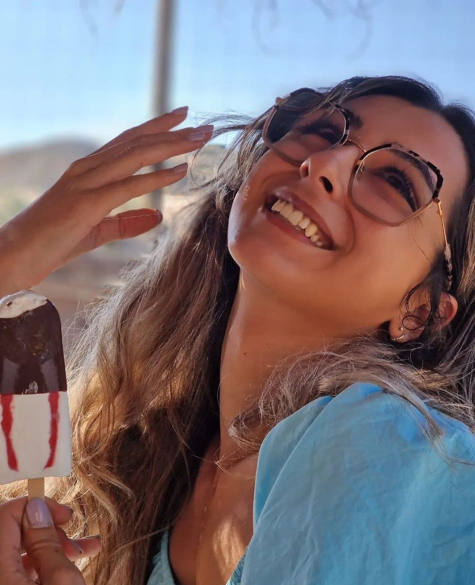
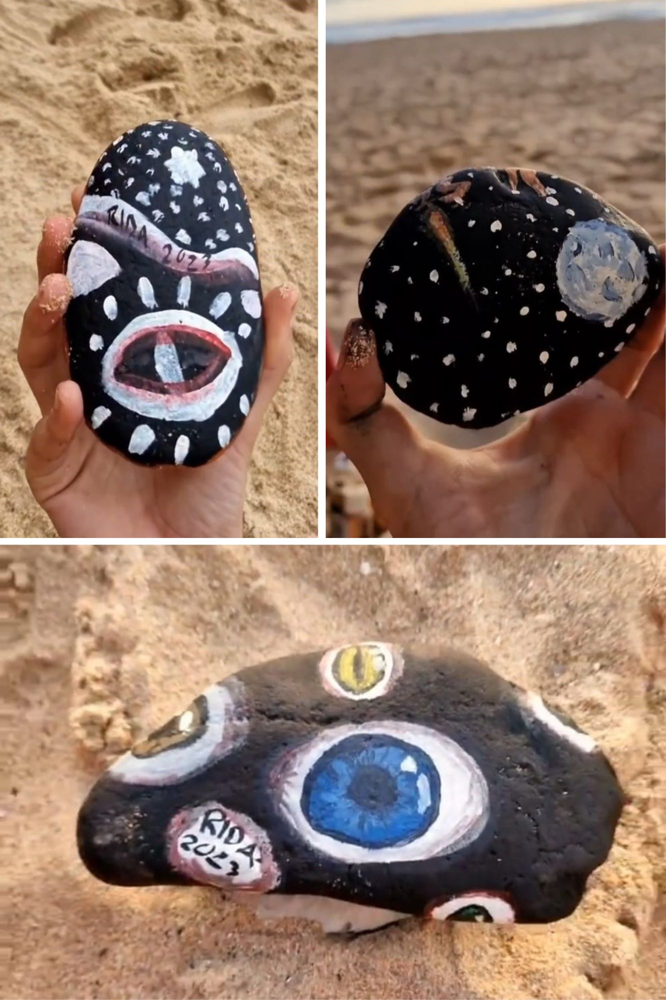

Arte, Tecnologia e Natureza: A Base da Minha Criatividade. Convido a
explorar meu portfólio, onde cada obra reflete a paixão por criar experiências visuais únicas, entrelaçando a
criatividade, inovação tecnológica e a beleza da natureza.
Eu sou a Margarida (ou Rida), uma mente criativa dedicada a desenvolver peças e conceitos artísticos únicos, originais e vibrantes.
Prefiro um conceito clean e atual, sempre com meu toque criativo.
Explorar o vasto universo artístico é mais do que uma profissão, é uma expressão pessoal e única.

Animação 2D - De Outro Mundo
Animação realizada em contexto de aprendizagem, focada na temática
da sustentabilidade e nos problemas globais.
A narrativa apresenta um cidadão descontente com as ações humanas no nosso planeta terra.
e decide transportar os animais e as plantas para um novo planeta sem a presença humana, onde a
qualidade de vida é significativamente melhor.
Animação 3D - Jako
Esta animação também foi realizada em contexto de aprendizagem.
A narrativa desta vez explora uma das múltiplas perspetivas que os seres humanos têm sobre o que
ocorre após a morte.
Mais especificamente, aborda uma teoria sobre almas gêmeas, sugerindo que quando um corpo falece, a
sua alma se divide em duas (o lado masculino e o feminino) e reencarna em dois corpos distintos.
Pintura de naturezas mortas
Pinto naturezas mortas, como pedras e fragmentos de lixo
provenientes do mar, adotando uma abordagem abstrata.
A minha técnica destaca a interação singular entre os elementos inanimados, conferindo-lhes uma
nova vida através da expressão artística.
No final, opto por deixar esses elementos no local onde os encontrei, permitindo que possam ser
observados ou levados por quem os encontrar.

Pintura em grande escala
Este é um projeto de remodelação que ainda está em andamento, no
qual estou a dar uma nova vida a um espaço.
Optei por tons pastel e inspirei-me em formas orgânicas, assimétricas e simples.
Posteriormente, irei incorporar elementos naturais, como plantas e outras decorações.
2D Character Design
A criação de personagens é a parte mais desafiadora para mim.
Quando estou a desenvolver um personagem, procuro assegurar que ele se identifique com a história e também tenha algo de original e pessoal.
A criação de (nome a definir), a personagem principal da série "Olhos do Tempo", não foi diferente.
Em Desenvolvimento
Serie de Animação - Olhos do tempo (Primeira cena)
Em Desenvolvimento
Escultura com leds
Este elemento luminoso foi criado tanto com uma função decorativa
como utilitária.
Ao mesmo tempo que decora o espaço, possui luz LED que permite iluminar com várias cores à
escolha e também regular a intensidade luminosa.
Este é um dos exemplos nos quais me inspiro na natureza para criar uma peça artística.
Outros Projetos
Por fim, quero apresentar mais dois projetos: cake design e tricot.
Começando pelo cake design, não é apenas um hobby para mim. Quando penso em criar um bolo, gosto de explorar diferentes sabores e reinventar bolos clássicos de maneiras inovadoras.
Por exemplo, este "tronco de Natal" é feito a partir de um bolo xadrez de chocolate e amêndoa, recheado com frutos vermelhos e um crocante de Ferrero Rocher.
Já o tricot é mais um passatempo. Em dias de mau tempo, quando não há muitas atividades para fazer, recorro a esta arte que proporciona resultados muito bonitos.